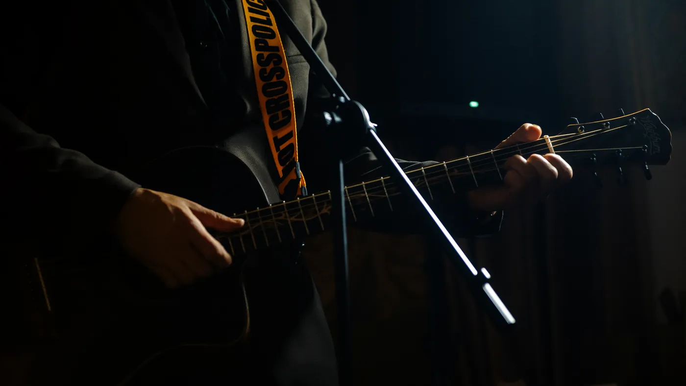
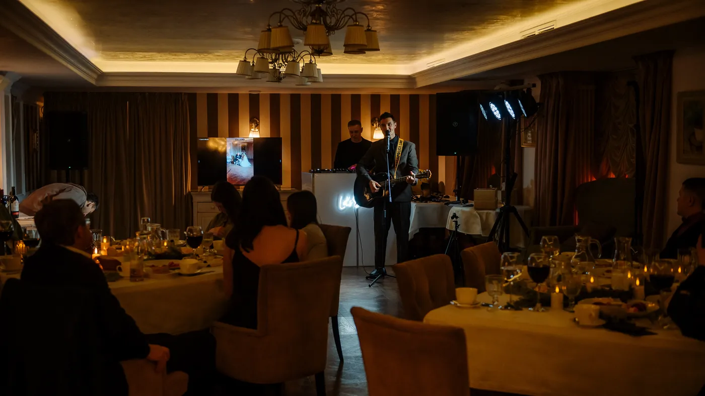
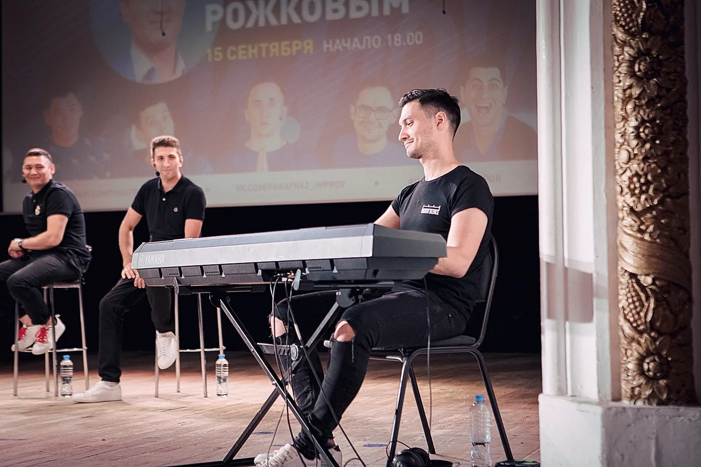

Живой вокал
Песни, которые поддерживают момент, а не звучат отдельно от него.
Music
Вокал, гитара, клавиши и музыкальная импровизация становятся частью вечера, а не отдельным номером.

Welcome
Музыкальный welcome на клавишах — живой фоновый сет во время сбора гостей. Лёгкие мелодии и импровизации создают настроение с первых минут, не перетягивая внимание на сцену.
Песни, которые поддерживают момент, а не звучат отдельно от него.
Камерная энергия и прямой контакт с залом.
Welcome, фоновые мелодии и точные эмоциональные акценты.
Песни и шутки рождаются из общения с гостями.
Живой номер прямо из того, что происходит в зале.
Про молодожёнов, именинника и гостей — с точным личным попаданием.
Гости поют свободно, без давления и лишней суеты.
Несколько песен, которые собирают внимание и воздух в одном месте.



Видео
Короткие живые фрагменты с вечеров: реакция гостей, музыка и то, как это ощущается в моменте.
Живой отклик зала после импровизационного момента.
Фрагмент, который сняла невеста во время вечера.
Голосовой музыкальный эпизод без лишней постановки.
Личный свадебный формат вместо стандартного рассказа со сцены.